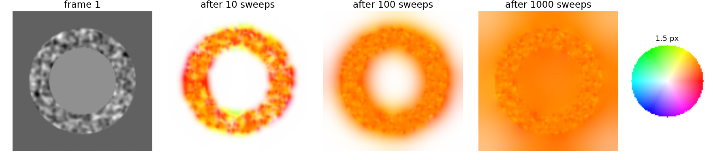
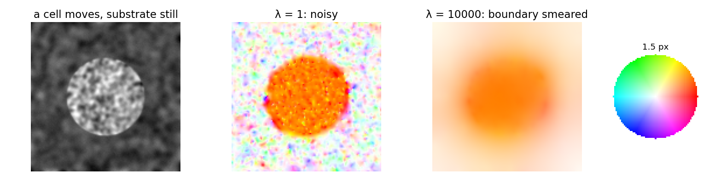

misfit to the data + λ · penalty on implausible answers.
Deconvolution: the unknown was the sharp image, the penalty its roughness.
Here: the unknown is the flow field(u, v); the misfit is how badly each pixel’s constraint is violated; the penalty is how much neighbouring vectors differ.
Graph cuts (segmentation energy) had the same structure with labels instead of vectors.
Horn–Schunck: the idea
Every pixel pays for two things:
data: its distance from its own constraint line (squared);
smoothness: λ times how much its vector differs from its neighbours’ (squared).
λ small: trust the constraints (noisy; flat regions undetermined). λ large: a smooth field that blurs across motion boundaries.
The result is dense: a vector at every pixel, including flat regions. Lucas–Kanade gives vectors with holes and a confidence.
Filling-in

In a flat region there are no constraints, but smoothness pulls the flow in from the textured pixels around it. Over the iterations the flow spreads inwards like heat: about a pixel per iteration, so a large flat region needs hundreds of iterations.
The update in words
Each iteration, every pixel
takes the average of its neighbours’ vectors,
moves that average towards its own constraint line, by a step that is large where its gradient is strong and small where the gradient is weak or λ is large.
A pixel already on its line keeps the average. A pixel in a flat region just takes the average: that is the filling-in.
By hand: (I_x, I_y, I_t) = (2, 0, -4) (line u = 2), neighbour average (0, 0), λ = 1: the new vector is (1, 0), half way to the line. With λ = 0 it jumps onto the line: (2, 0).
The math: Horn–Schunck
Discrete energy over pixels p and 4-neighbour pairs (p, q): E(u, v) = \sum_p (I_x u_p + I_y v_p + I_t)^2 + \lambda \sum_{(p, q)} \big[(u_p - u_q)^2 + (v_p - v_q)^2\big]. With the neighbour averages \bar u_p, \bar v_p, setting \partial E/\partial u_p = \partial E/\partial v_p = 0 gives (I_x^2 + 4\lambda)u + I_xI_y v = 4\lambda\bar u - I_xI_t and its twin, solved by u = \bar u - I_x\,\frac{I_x\bar u + I_y\bar v + I_t}{4\lambda + I_x^2 + I_y^2},\qquad v = \bar v - I_y\,\frac{I_x\bar u + I_y\bar v + I_t}{4\lambda + I_x^2 + I_y^2}.
Applied to all pixels repeatedly: an iterative solver of a sparse linear system. E is a sum of squares of linear functions: convex, one minimum.
Updating the pixels in checkerboard order (first the “black”, then the “white” ones) makes each half-step an exact minimisation: E never increases (the demo does this).
Continuous form (Euler–Lagrange): I_x(I_xu + I_yv + I_t) - \lambda\nabla^2 u = 0, and the same for v.
Try it: Horn–Schunck
Sharp motion boundaries
The squared penalty hates jumps: a jump of 2 costs 4 times a jump of 1. So it blurs the border between a moving cell and the still background.
Robust penalties (total variation, Charbonnier): pay for the size of a jump, not its square; one sharp jump becomes cheaper than a smeared ramp. Pointer: the “total variation” row of the regularisation table, and MRF priors on the Ising elective.
A robust data term ignores pixels where brightness constancy fails (occlusions, bleaching).
Modern variational flow = robust data + robust smoothness + coarse-to-fine + warping (the pyramid of the last unit works for Horn–Schunck too).

Lucas–Kanade or Horn–Schunck?
Lucas–Kanade
Horn–Schunck
assumption
constant flow in a window
smooth flow everywhere
output
vectors where there is texture, plus a confidence
a dense field
knob
window size ρ
λ
computation
closed form per pixel
many iterations
flat regions
no answer (honest)
filled in from the surroundings (plausible, unchecked)
large motion
pyramid + warping
pyramid + warping
Learned flow networks (modern deep learning day) are trained on synthetic sequences and evaluated in exactly the way of the next slides.
Evaluating a flow field: with ground truth
Make test data whose motion is known: warp a real image by a known flow (as in the demos), or simulate a sequence.
Endpoint error (EPE): the length of (estimate − truth), per pixel; its mean over the image; its map. Errors concentrate at motion boundaries and in flat regions.
Angular error (AE): the angle between (u, v, 1) and (u_{gt}, v_{gt}, 1), the older measure. It punishes errors at slow pixels much more: estimate (0.1, 0) against truth (0.6, 0) has EPE 0.5 and AE 25°; (2, 1) against (2.5, 1) also has EPE 0.5 but AE only 5.8°. EPE is preferred.
Choose λ (or ρ) by the EPE on synthetic data that resembles your real data.
The “+1” treats each flow as a direction in space–time, (u, v, 1): the AE is the angle between the two space–time directions.
For slow motions the space–time vectors are nearly (0, 0, 1), so a small absolute error is a large angle; for fast motions the same absolute error is a small angle.
Both are 0 iff the estimate equals the truth; EPE is in pixels and easy to interpret.
Without ground truth: the warping residual
On real data there is no truth. Warp frame 2 back by the estimated flow and subtract frame 1: the warping residual.
A correct flow (and brightness constancy) leaves only noise.
A small residual is necessary, not sufficient: in a flat region, a wrong flow leaves no residual (flat moved anywhere is still flat). The aperture problem hides errors in the residual too.
Large residuals point to failures: motion boundaries, occlusions, bleaching.
Recall the discrepancy idea of the regularisation unit: a residual much smaller than the noise means overfitting.
Try it: evaluating
Summary
Horn–Schunck: minimise data misfit + λ·(differences between neighbouring vectors): the regularisation pattern with a vector field as the unknown.
Update: average the neighbours, step towards the constraint line; flat regions are filled in from their surroundings, slowly.
λ: small = noisy, large = smeared motion boundaries; robust penalties keep sharp boundaries.
LK: local, sparse, with a confidence. HS: global, dense. Both need small motion or a pyramid.
Evaluate with endpoint error against known motion; without truth, the warping residual finds failures but cannot prove correctness.